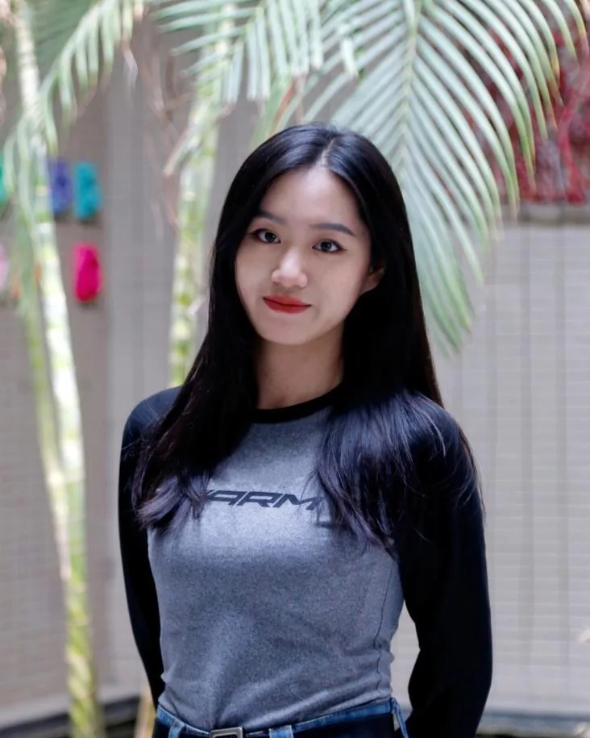
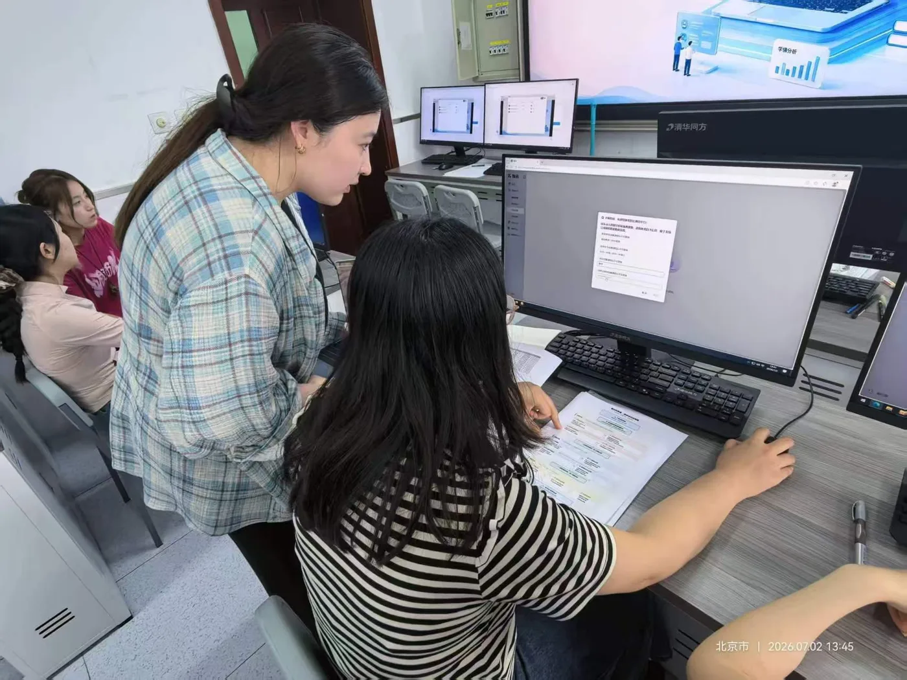
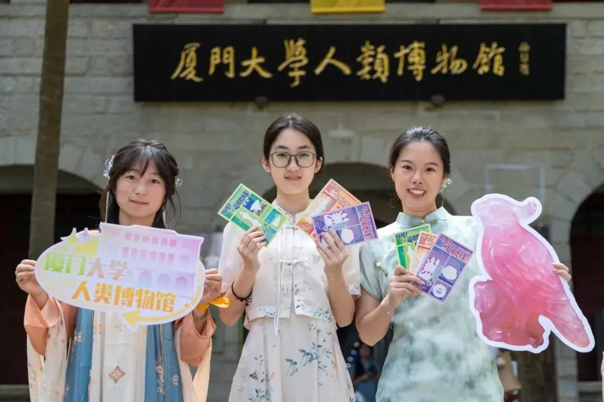
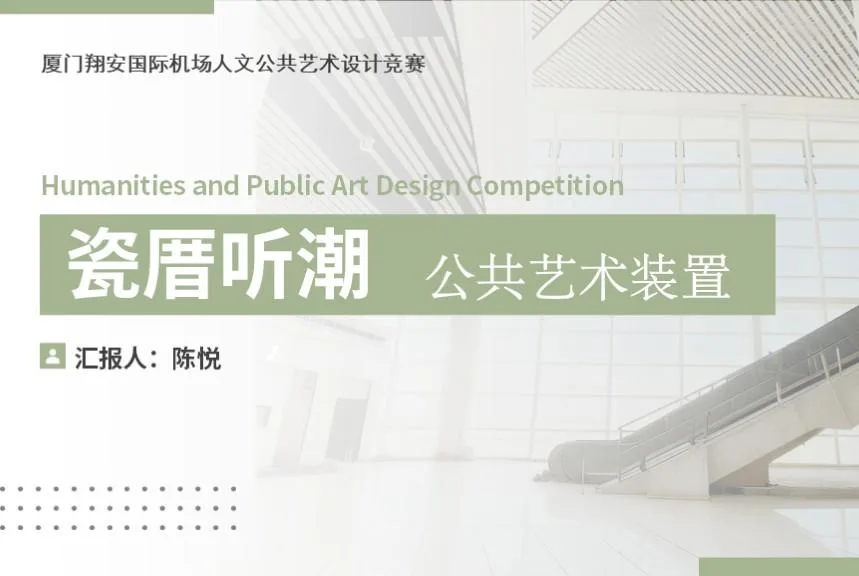

CHEN YUE / 2026 PORTFOLIO
让内容被理解，
让创意真正落地。
陈悦 厦门大学 · 美术与书法专业硕士研究生
内容策划 × 品牌传播 × 视觉创意 × 项目落地
擅长将复杂的信息、产品与文化内容，转化为清晰、有吸引力且能够真正落地的传播方案。

理解 · 表达 · 实践XIAMEN, CHINA
HOW I WORK
从理解问题开始。
我的工作通常并不从“做一个设计”开始，而是从理解问题开始。
- 01理解问题UNDERSTAND
- 02提炼与策划STRATEGY
- 03内容构建CONTENT
- 04视觉表达DESIGN
- 05协同落地DELIVERY
- 06反馈优化ITERATION
TOOLKIT / CAPABILITIES
把技能连接到实际创作。
从内容策划到视觉表达，用不同工具推进项目。
跨领域能力图谱 能力方向示意01资料归纳 · 选题策划 · 内容框架
PowerPointWord
政企方案、教师课程与公众号内容
品牌视觉 · 插图 · 传播物料
PhotoshopIllustrator
品牌 IP、文创产品与系列海报
数字雕塑 · 空间设计 · 渲染
ZBrush3DMaxKeyShot
公共艺术装置与雕塑衍生设计
信息整理 · 智能体 · 网页原型
ChatGPTCodexGeminiZ.ai
知识库搭建与 AI 辅助创意实现
人像摄影 · 民俗纪实 · 视频剪辑
Premiere剪映
摄影系列与视频内容制作
7To G / To B 项目汇报与合作推进
26所中小学教师赋能覆盖
77名全学科教师
2000+博物馆公众服务人次
3000+MAZOO IP 社媒粉丝
50+品牌原创社媒内容
40+ 场博物馆讲解30+ 件视觉及文创输出20 张主题活动海报24 张科普展板90+ 页教师培训课程 PPT200+ 个智能体知识点
03 / SELECTED WORK
四个项目，四种实践。
01
让复杂的 AI 产品更容易理解与使用
面向政府、学校与教师重新组织 AI 教育产品信息，将方案汇报、产品传播与教师培训连接到真实使用场景。
7To G / To B 项目20+所学校推广26所学校赋能
查看项目 →
02
从传统文化到年轻品牌
从妈祖文化研究出发，建立 IP、主题内容与文创产品，再通过小红书和线下市集与年轻用户建立联系。
50+原创社媒内容3000+账号粉丝600+单篇最高点赞
查看项目 →03
让文物知识更容易被公众理解
将馆藏知识转化为讲解、活动、展板和文创，面向游客、学生与线上用户调整内容表达。
40+场公众讲解2000+公众服务人次5项主题活动
查看项目 →
04
从空间问题出发设计公共艺术
面对客流与地面动线限制，以多层级悬吊结构利用垂直空间，将闽南建筑、德化瓷艺与海洋文化融为一体。
厦门翔安国际机场人文公共艺术设计竞赛 · 国家级入围奖
查看项目 →
数字雕塑、实物创作与摄影，记录我对形态、人物和地方文化的持续观察。
3D / SCULPTURE
不动明王
参考山西传统彩塑造像，通过数字建模塑造人物比例、多臂动态与体块关系，细化面部神态、发势、衣褶和手部器物。结合 3D 打印呈现实物，展示从整体造型到局部细节的塑造能力。
整体造型 · 动态结构 · 细节塑造 · 实物呈现
2022.10 / SCULPTURE
兔步青云
以生肖文化与传统彩塑的造型韵味表现奔兔的精、气、神，并探索灯具和加湿器的衍生设计。
正面 · 背面 · 衍生设计
DOCUMENTARY PHOTOGRAPHY
闽南“送王船”
以民俗纪实摄影记录仪式、人与现场，观察地方文化的公共表达。
送王船民俗纪实：戏曲演出送王船民俗纪实：仪式现场送王船民俗纪实：人群与活动送王船民俗纪实：夜色送王船民俗纪实：夜间仪式 PORTRAIT PHOTOGRAPHY
人像摄影
在自然光与日常环境中观察人物状态。
CHEN YUE / PHOTOGRAPHY 01 光线、表情与环境
CHEN YUE / PHOTOGRAPHY 0202 / 春日光影 CHEN YUE / PHOTOGRAPHY 03光影 / 姿态 / 细节 CHEN YUE / PHOTOGRAPHY 0403 / 草地肖像
CHEN YUE / PHOTOGRAPHY 05CHEN YUE / PHOTOGRAPHY 06 04 / 毕业季约拍 CHEN YUE / PHOTOGRAPHY 07CHEN YUE / PHOTOGRAPHY 08 一本关于光与日常的摄影书 · 点击照片查看原图01 / 04
国家级
厦门翔安国际机场人文公共艺术设计竞赛
入围奖国家级
首届中国水彩静物画展
初选入围省级
全国大学生电子商务“创新、创意及创业”挑战赛
一等奖省级
福建省“塑韵八闽·春和骏鸣”雕塑展
参展省级
山西省高校毕业季优秀美术作品展
参展省级
河北省青年美术与设计展
优秀作品省级
山西省第三届雕塑展
参展校级
厦门大学研究生学业奖学金
奖学金校级
优秀志愿者 / 本科优秀毕业生 / 三好学生
荣誉称号校级
一等奖学金
奖学金